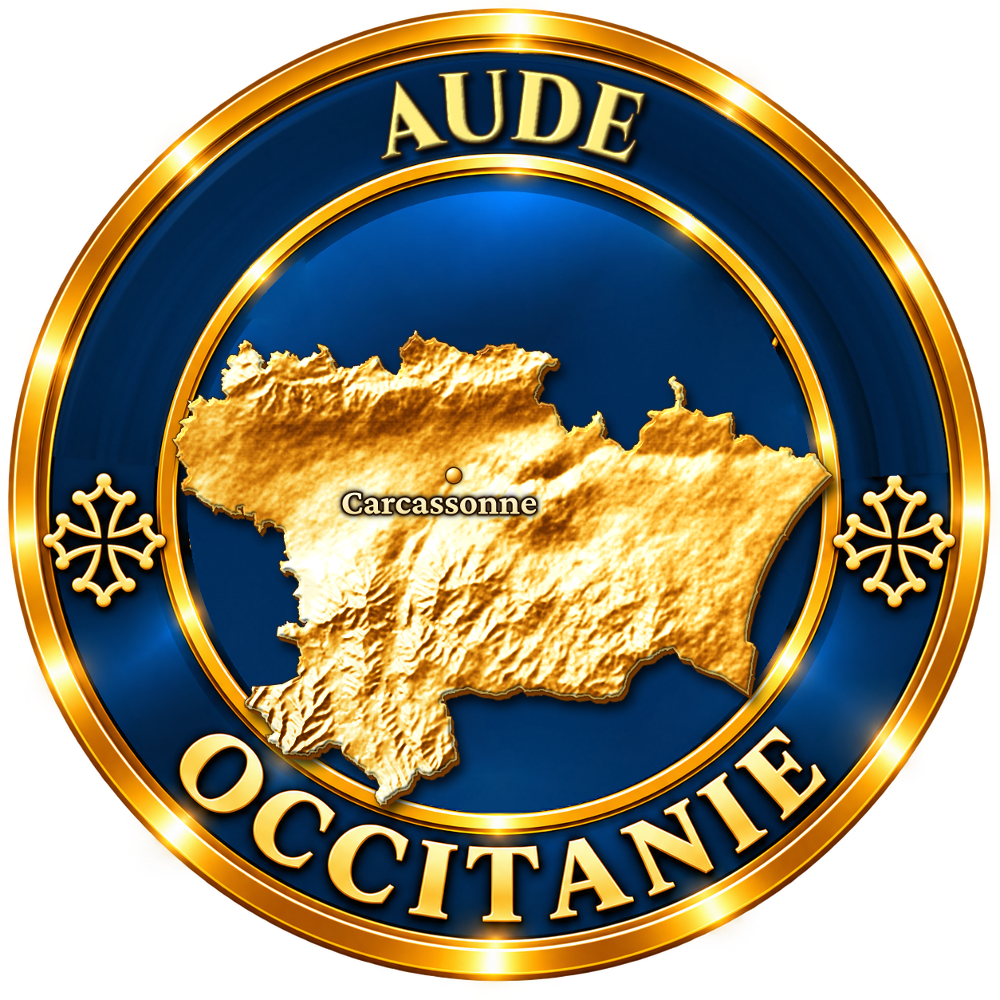
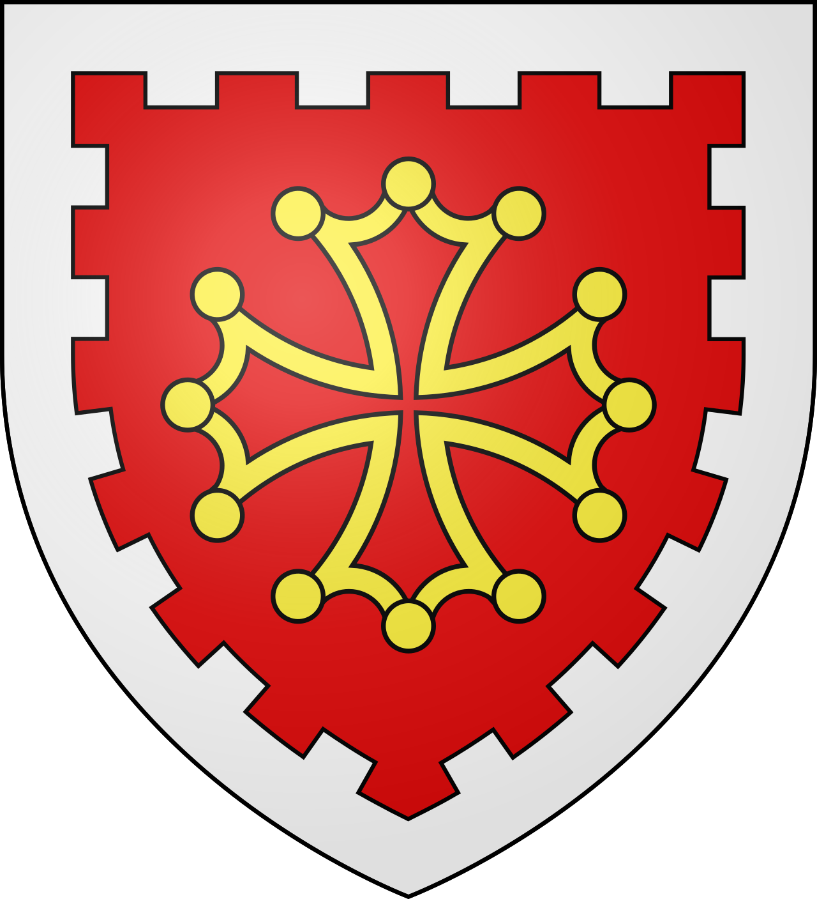

Mettez une bûche de plus dans le feu.
Ce soir, on raconte comment une ville a été sauvée par un cochon.
Il y a très longtemps, si longtemps que les tours de Carcassonne n'avaient pas encore toutes leurs toitures pointues, la cité était tenue par un prince sarrasin nommé Balaak. Un jour, l'armée de Charlemagne vint camper au pied de la colline. Des tentes à perte de vue, des chevaux, des bannières, et un empereur à la barbe fleurie qui avait juré de ne pas repartir sans la ville.
Le siège commença. Il dura un an, puis deux, puis trois. Au cours d'une sortie, le prince Balaak fut tué. Les soldats de la cité se tournèrent alors vers sa veuve, une femme à l'œil vif et à la voix ferme, que tout le monde appelait Dame Carcas.
« Tant que je serai debout, » dit-elle, « personne n'ouvrira ces portes. »
Dame Carcas savait que ses hommes étaient trop peu nombreux. Alors elle fit fabriquer des mannequins de paille, leur fit enfiler des casques et des cottes, et les dressa sur toutes les tours. Elle-même courait d'un créneau à l'autre pour lancer des flèches, tantôt d'ici, tantôt de là. Vu d'en bas, on aurait juré que la cité grouillait de défenseurs.
Mais on ne nourrit pas un siège avec de la paille. La cinquième année passa. Au début de la sixième, les greniers sonnaient creux et les citernes baissaient. Dame Carcas ordonna qu'on lui apporte tout ce qui restait à manger dans la ville.
On chercha dans chaque cave, dans chaque coffre, sous chaque lit. Et quand on eut tout rassemblé sur la place, il n'y avait plus qu'un petit cochon maigre et un sac de blé.
Les soldats baissaient la tête. Certains parlaient déjà de se rendre. Dame Carcas, elle, regardait le cochon. Longtemps. Puis elle sourit.
« Donnez-lui le blé. Tout le blé. »
On crut qu'elle avait perdu la raison. Nourrir un cochon avec le dernier grain de la ville, quand les enfants avaient faim ! Mais on lui obéit. Le cochon mangea, mangea, mangea, jusqu'à ce que son ventre soit rond comme une barrique.
Alors Dame Carcas le fit porter tout en haut de la plus haute tour. Et devant les guetteurs de Charlemagne, elle le précipita par-dessus les remparts.
Le cochon tomba au pied des murailles et éclata. Il en sortit du blé, du bon blé doré, qui se répandit sur le sol devant les soldats ébahis.
On courut prévenir l'empereur. Charlemagne vint voir de ses propres yeux, et il se gratta la barbe. « Si après cinq ans de siège, » dit-il, « ils ont encore assez de blé pour en gaver leurs cochons, nous serons morts de vieillesse avant qu'ils aient faim. » Et il donna l'ordre de lever le camp.
Du haut des tours, Dame Carcas regarda les tentes se plier une à une. Quand la longue file de l'armée commença à s'éloigner sur la route, elle fit sonner toutes les cloches de la cité à la volée, pour fêter la victoire et, peut-être aussi, pour proposer la paix.
Dans la plaine, un des chevaliers de l'empereur se retourna en entendant ce carillon. « Sire, » s'écria-t-il, « écoutez ! Carcas sonne ! »
Et depuis ce jour, dit-on, la ville s'appelle Carcassonne.
Quand vous passerez la porte Narbonnaise, levez les yeux : Dame Carcas vous y attend toujours.
Et si vous avez faim là-haut, ne comptez pas sur son cochon.
Dame Carcas est le personnage d'une légende étiologique, c'est-à-dire un récit inventé pour expliquer l'origine d'un nom. Elle situe l'action au VIIIe siècle, au temps des guerres entre Francs et Sarrasins dans le sud de l'Europe. Les versions s'accordent sur l'essentiel : la mort du mari, les cinq années de siège, le cochon gavé du dernier blé et jeté des remparts, les cloches et le jeu de mots final.
Les historiens considèrent Dame Carcas comme un personnage de fiction, et rien n'atteste que Charlemagne soit jamais venu à Carcassonne. Le vrai nom de la ville est bien plus ancien : à l'époque romaine, elle s'appelait déjà Carcaso.
La légende appartient à la tradition populaire et n'a pas d'auteur. Notre version est une réécriture originale de L'Âme des Régions : les dialogues, la scène de la fouille des caves et la fin sont de notre plume. Le passage des mannequins de paille reprend un détail que l'on trouve dans plusieurs versions anciennes de la légende.
La légende de Dame Carcas appartient au domaine public. L'étude citée reste protégée : elle est mentionnée comme référence, aucun passage n'en est reproduit.
À l'entrée de la Cité, près du pont-levis de la porte Narbonnaise, une reproduction du buste de Dame Carcas accueille les visiteurs.
La légende a donné son nom à une auberge de la Cité et à des sablés vendus aux visiteurs, les « friandises de Dame Carcas ».
Faire croire à l'assiégeant qu'on a des vivres en abondance est une ruse très répandue dans les légendes de siège. À Lourdes, c'est une truite qui joue le rôle du cochon.
Avec ses 3 km de remparts et ses 52 tours, la Cité de Carcassonne est la plus grande cité médiévale fortifiée d'Europe. Elle est inscrite au patrimoine mondial de l'Unesco depuis 1997.